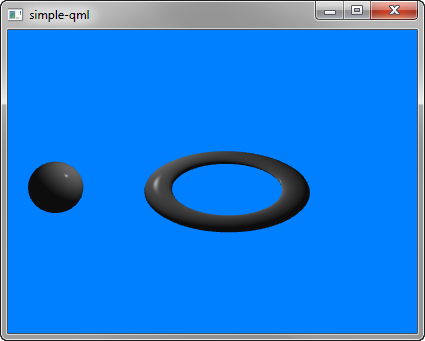

Qt 3D: Simple QML Example
A QML application that demonstrates how to render a scene in Qt 3D.

Simple demonstrates how to render a scene in Qt 3D.
Running the Example
To run the example from Qt Creator, open the Welcome mode and select the example from Examples. For more information, visit Building and Running an Example.
Setting Up the Scene
We set up the entire scene in the main.qml file.
To be able to use the types in the Q3D and Q3D Render modules, we must import the modules:
import Qt3D.Core 2.0 import Qt3D.Render 2.0
The first entities we create are a Camera, which represents the camera used for the final rendering, and a camera controller, which allows us to control this camera using the keyboard or the mouse:
Camera { id: camera projectionType: CameraLens.PerspectiveProjection fieldOfView: 45 aspectRatio: 16/9 nearPlane : 0.1 farPlane : 1000.0 position: Qt.vector3d( 0.0, 0.0, -40.0 ) upVector: Qt.vector3d( 0.0, 1.0, 0.0 ) viewCenter: Qt.vector3d( 0.0, 0.0, 0.0 ) }
A RenderSettings entity specifies a ForwardRenderer as the active framegraph:
components: [ RenderSettings { activeFrameGraph: ForwardRenderer { clearColor: Qt.rgba(0, 0.5, 1, 1) camera: camera showDebugOverlay: true } }, // Event Source will be set by the Qt3DQuickWindow InputSettings { } ]
The event source is set by the Qt3DQuickWindow:
InputSettings { }